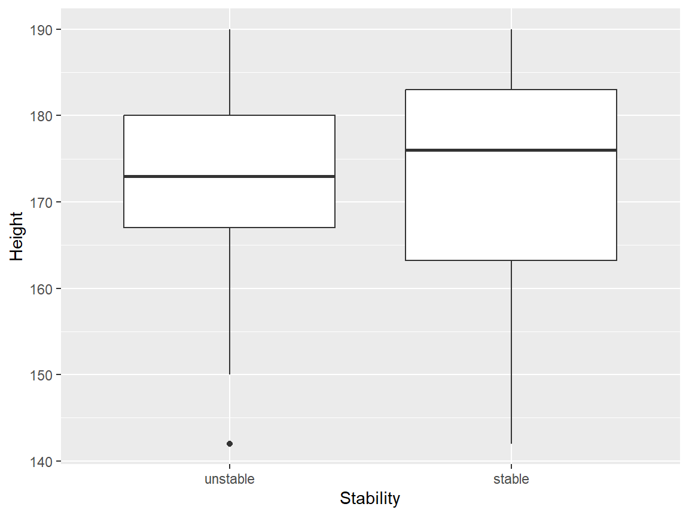
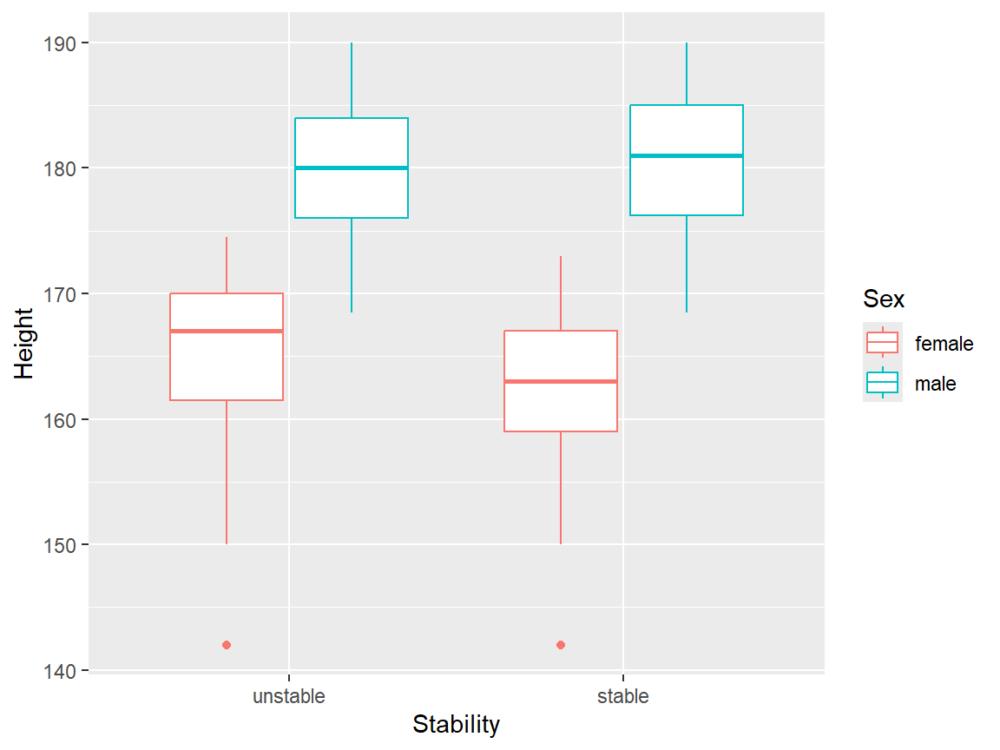
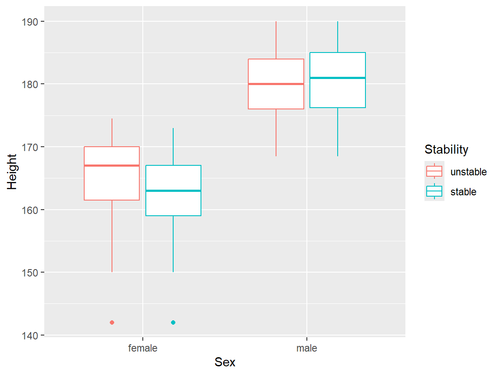
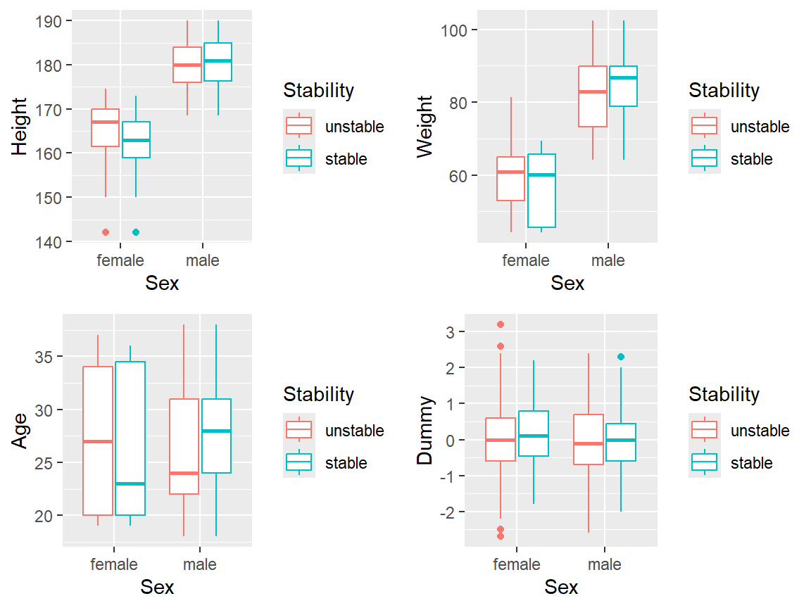
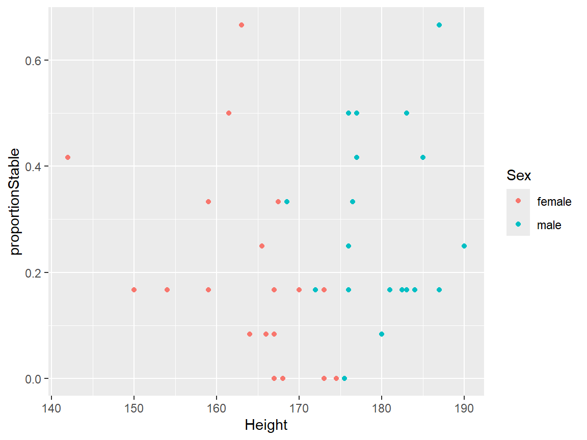
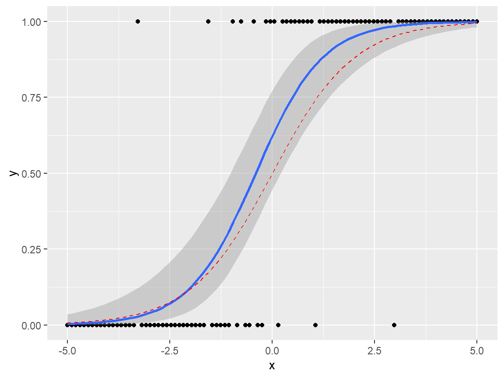
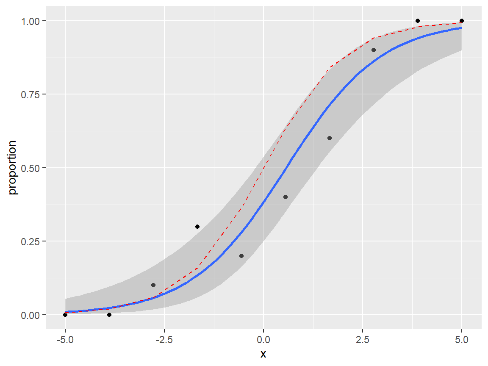
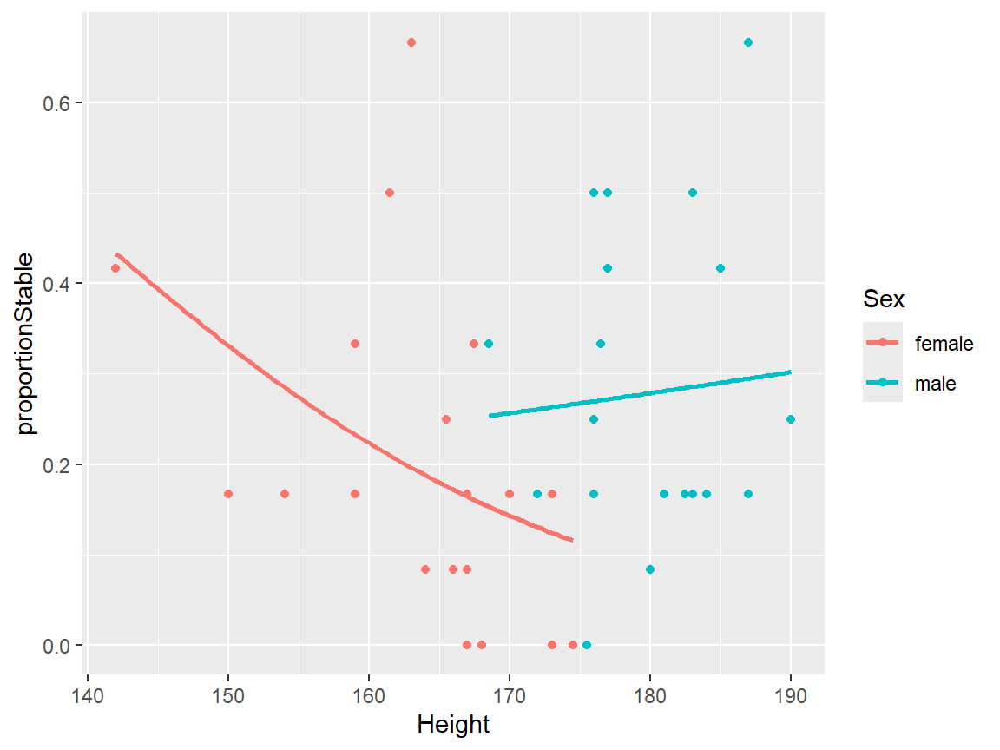

Section 24 EDA for logistic regression
In this section, we will illustrate an exploratory data analysis for a logistic regression modelling exercise. Two aims of an EDA would be
- to understand what models can be fitted; to see what terms can and cannot be included in a model;
- to indicate what conclusions we might make from the modelling, so that we can be more alert to mistakes or problems later on.
24.1 Example: a balance study
We will use an example given in (Faraway 2016a), Section 13.3. (I have also used some of the code provided there). There is a chain of sources for these data! I obtained the data via the package faraway (Faraway 2016b), which in turn got the data from the “OzDasl”: the Australasian Data and Story Library, and the original source for the data is (Steele 1998).
For details, see the help file ?faraway::ctsib. Quoting the description from the help file:
An experiment was conducted to study the effects of surface and vision on balance. The balance of subjects were observed for two different surfaces and for restricted and unrestricted vision. Balance was assessed qualitatively on an ordinal four-point scale based on observation by the experimenter. Forty subjects were studied, twenty males and twenty females ranging in age from 18 to 38, with heights given in cm and weights in kg. The subjects were tested while standing on foam or a normal surface and with their eyes closed or open or with a dome placed over their head. Each subject was tested twice in each of the surface and eye combinations for a total of 12 measures per subject.
The dependent variable CTSIB was on four point ordinal scale, with 1 meaning ‘stable’ and 4 meaning ‘unstable’. Faraway converted it to binary variable: 1 to represent the original level 1, and 0 to represent the original levels 2-4. I will do the same, and also add in a random, dummy covariate, which we will know for certain is independent of the response. I will also convert the Subject variable (representing the 40 participants in the experiment) to a factor variable:
set.seed(123)
balance <- faraway::ctsib %>%
mutate(Stable = ifelse(CTSIB ==1, 1, 0),
Subject = factor(Subject),
Dummy = round(rnorm(480), 1))so the data for our EDA are in the data frame balance:
## Subject Sex Age Height Weight Surface Vision CTSIB Stable Dummy
## 1 1 male 22 176 68.2 norm open 1 1 -0.6
## 2 1 male 22 176 68.2 norm open 1 1 -0.2
## 3 1 male 22 176 68.2 norm closed 2 0 1.6
## 4 1 male 22 176 68.2 norm closed 2 0 0.1
## 5 1 male 22 176 68.2 norm dome 1 1 0.1
## 6 1 male 22 176 68.2 norm dome 2 0 1.724.1.1 Terminology
We’ll refer to
Stableas the dependent variable, with the observed value referred to as responses.
All the other variables are referred to as independent variables, but we will additionally classify
SurfaceandVisionas design variables (these were controlled by the experimenter);Sex,Age,HeightandWeightas (participant-specific) covariates;Subjectas the grouping variable: we have 40 groups of observations, one group per participant.
Note that Surface, Vision, Sex and Subject are all factor independent variables, as they are all qualitative rather than quantitative.
24.2 What to look for in an EDA
We’ll aim to develop a general understanding of the data, but there is one critical thing to check:
If there is a setting of the factor independent variables, for which the dependent variable is observed always to take the same value (always 1 or always 0), we will have problems modelling that particular factor setting.
Suppose we have a model of the form
\[ Y_{ij} \sim Bernoulli(p_{i}),\quad \log\left(\frac{p_{i}}{1-p_{i}}\right) = \mu_i \] where \(i=1,\ldots,I\) represents a group, and \(j=1,\ldots,n_i\) represents an observation within a group. If, for example, all our observations in group \(i=2\) were 1s (so we have observations \(y_{2j}=1\) for all \(j\)), then the likelihood function would be maximised at \(p_2=1\), i.e. \(\mu_2=\infty\). We couldn’t fit this model with ordinary maximum likelihood, but a Bayesian approach might work (we’d need to supplement the data with other information about \(\mu_2\).)
24.2.1 What to plot
When doing an EDA before ordinary linear modelling, we might make scatter plots of the response variable against each (continuous) independent variable, and box plots of the dependent variable against each factor independent variable. We have to think more carefully about what to plot here; the dependent variable can only be 0 or 1, so basic scatter plots/box plots won’t be helpful. Two possibilities are:
- box plots of continuous independent variable, with the dependent variable thought of as the group variable. This will help us see if a particular response (1 or 0) tends to be associated with low/high values of an independent variable.
- a scatter plot of the proportion of ‘1’ responses against a continuous independent variables, if there are groups of observations with the common values of the independent variable.
24.3 Investigating the experimental design
Firstly, we might look at the data for a single Subject, and just examine the response and design variables. (The data description in ?faraway::ctsib tells us that we have a complete factorial design with respect to the design factors and participants, with two replications per combination, but we’ll check this anyway.)
## Surface Vision Stable
## 1 norm open 1
## 2 norm open 1
## 3 norm closed 0
## 4 norm closed 0
## 5 norm dome 1
## 6 norm dome 0
## 7 foam open 0
## 8 foam open 0
## 9 foam closed 0
## 10 foam closed 0
## 11 foam dome 0
## 12 foam dome 0We’ll check the levels of the factor variables Surface and Vision:
## [1] "foam" "norm"## [1] "closed" "dome" "open"So this confirms that we have each combination of factors, replicated twice, for the first subject.
We can check all subjects have same number of observations for each surface and vision level, using the count() function to count the number of observations per combination, and then using the summary() function to check that this number is 2 for all combinations.
## Min. 1st Qu. Median Mean 3rd Qu. Max.
## 2 2 2 2 2 2This confirms that for every Subject, there are two replications for each combination of Vision and Surface.
24.4 Contingency tables
We can use the xtabs() function to make contingency tables of responses. If the data were unbalanced we’d need to interpret these a little more cautiously, and be alert to Simpson’s paradox.
## Stable
## Sex 0 1
## female 193 47
## male 173 67## Stable
## Surface 0 1
## foam 230 10
## norm 136 104## Stable
## Vision 0 1
## closed 143 17
## dome 138 22
## open 85 75So in conclusion, there appear to be clear effects of Surface and Vision, in the way that we would expect, but there does not appear to be an effect of Sex.
24.5 Checking for identical responses
We will first examine the design factors, and see if there any combinations for which all the responses were stable (or all unstable.)
We can compute the proportion of stable responses by calculating the mean of Stable for each combination of Surface and Vision:
## # A tibble: 6 × 3
## Surface Vision proportion
## <fct> <fct> <dbl>
## 1 foam closed 0
## 2 foam dome 0
## 3 foam open 0.125
## 4 norm closed 0.212
## 5 norm dome 0.275
## 6 norm open 0.812Alternatively, we can obtain a contingency table with the xtabs() command. We can count the total number of 1s for each combination of Surface and Vision levels, by specifying the dependent variable Stable in the formula argument:
## Vision
## Surface closed dome open
## foam 0 0 10
## norm 17 22 65All participants were unstable for foam-closed and foam-dome groups: this would cause problems if we tried to include interaction effects between the Vision and Surface variables.
We’ll now see if there are any participants (Subject) who were always stable, or always unstable. We have 40 participants, so a contingency table would be quite large, but we can work out the proportion of 1s per Subject, and then make a contingency table of the proportions:
balance %>%
group_by(Subject) %>%
summarise(meanStable = mean(Stable), .groups = 'drop') %>%
count(meanStable) ## # A tibble: 8 × 2
## meanStable n
## <dbl> <int>
## 1 0 5
## 2 0.0833 4
## 3 0.167 15
## 4 0.25 3
## 5 0.333 4
## 6 0.417 3
## 7 0.5 4
## 8 0.667 2So there were five subjects who were always unstable. We’d have problems including Subject as a fixed effect, but we could incorporate it as a random effect, as there would be some shrinkage of the random effects towards 0.
24.6 Exploratory plots
24.6.1 A simple box plot
For continuous independent variables, we can try box plots of each independent variable with the dependent variable treated as a grouping factor. We will create a new variable Stability: the dependent variable Stable, re-defined as a factor variable; we’ll need this for the box plots.
balance <- balance %>%
mutate(Stability = factor(balance$Stable))
levels(balance$Stability) <- c("unstable", "stable")We can then make a box plot, for example, of heights:

24.6.2 Interactions
We can visualise possible interaction effects between a continuous independent variable and a factor independent variable, by setting additional aesthetics. We could map Sex to colour:

but this is perhaps a little confusing, because the main result this plot appears to present is the relationship between Sex and Height. It might be better to map the dependent variable onto colour here:

We will now draw box plots for all four continuous independent variables, again, split by sex. The plot involving the Dummy variable can be useful here, to give us an idea of what we might see purely by chance.
balance <- balance %>%
mutate(Stability = factor(balance$Stable))
levels(balance$Stability) <- c("unstable", "stable")
p1 <- ggplot(balance, aes(x = Sex, y = Height,
colour = Stability)) +
geom_boxplot()
p2 <- ggplot(balance, aes(x = Sex, y = Weight,
colour = Stability)) +
geom_boxplot()
p3 <- ggplot(balance, aes(x = Sex, y = Age,
colour = Stability)) +
geom_boxplot()
p4 <- ggplot(balance, aes(x = Sex, y = Dummy,
colour = Stability)) +
geom_boxplot()
gridExtra::grid.arrange(p1, p2, p3,p4, ncol = 2)
24.7 Plotting mean proportions
If we compute the proportion of stable responses for each subject, that gives us a quantitative dependent variable that we can use in plots involving the participant-specific covariates. We’ll make a new data frame, and include the height variable as an example:
balanceGrouped <- balance %>%
group_by(Subject) %>%
summarise(proportionStable = mean(Stable),
Sex = Sex[1],
Height = Height[1],
.groups = 'drop')
head(balanceGrouped)## # A tibble: 6 × 4
## Subject proportionStable Sex Height
## <fct> <dbl> <fct> <dbl>
## 1 1 0.25 male 176
## 2 2 0.167 male 181
## 3 3 0 male 176.
## 4 4 0.0833 male 180
## 5 5 0.0833 female 166
## 6 6 0.417 male 177Now we can make a scatter plot (with points coloured by Sex):

24.8 Plotting fitted logistic regression lines
24.8.1 Plots with Bernoulli data
We can add fitted regression lines easily with the geom_smooth command. To visualise how this works more easily, we’ll generate a dataset from a logistic regression model
\[
Y_i|x_i \sim Bernoulli(p_i),\quad\quad \log\left(\frac{p_i}{1-p_i}\right) = x_i.
\]
set.seed(1)
x <- seq(from = -5, to = 5, length = 100)
p <- exp(x) / (1+exp(x))
y <- rbinom(100, 1, p)
df1 <- data.frame(x, y, p)We can then draw a scatter plot as normal, and add in some extra arguments to geom_smooth() to specify the model. (This uses the syntax from the glm command: this will be covered in detail in Semester 2.) We’ll also add in the true regression line, as a red dashed line.
ggplot(df1, aes(x = x, y = y))+
geom_point()+
geom_smooth(method="glm", formula = 'y~x',
method.args=list(family="binomial"),
se=TRUE) +
geom_line(aes(y = p), col = "red", linetype = "dashed")
24.8.2 Plots with Binomial \((n>1)\) data
If the data can be grouped by the covariate value, it may be preferable to plot proportions on the \(y\) axis. Suppose our model is
\[ Y_{ij}|x_i \sim Bernoulli(p_i),\quad\quad \log\left(\frac{p_i}{1-p_i}\right) = x_i, \quad j= 1,\ldots,n_i, \] so that \[ \sum_{j=1}^{n_i}Y_{ij}|x_i \sim Binomial(n_i, p_i) \]
Given the observations \(y_{ij}\), we can plot \(\frac{1}{n_i}\sum_{j=1}^{n_i}y_{ij}\) against \(x_i\). To illustrate this, first, we’ll make an example data set.
set.seed(1)
x <- seq(from = -5, to = 5, length = 10)
p <- exp(x) / (1+exp(x))
y <- rbinom(10, 10, p)
df2 <- data.frame(x, proportion = y / 10, p, n = 10)We will need to map the sample sizes \(n_i\) to an aesthetic weight.
ggplot(df2, aes(x = x, y = proportion, weight = n))+
geom_point()+
geom_smooth(method="glm", formula = 'y~x',
method.args=list(family="binomial"),
se=TRUE) +
geom_line(aes(y = p), col = "red", linetype = "dashed")
We can try this on the balance data. I’d leave out the standard errors in the geom_smooth(), as the model assumptions are (probably ) not valid here; this plot ignores Subject, Vision and Surface effects.
balanceGrouped %>%
mutate(w = 12) %>%
ggplot(aes(x = Height, y = proportionStable,
weight = w, col = Sex)) +
geom_point() +
geom_smooth(method="glm",
method.args=list(family="binomial"),
se = FALSE)
24.9 Summary
To summarise what we’ve learned from our EDA:
VisionandSurfaceclearly have an effect on the dependent variable;- we would have problems fitting a logistic regression model with a
Vision-Surfaceinteraction, and/or fixed effects forSubject(unless we tried a Bayesian approach; priors could help here.) - there does appear to be variability between
Subjects; we should incorporateSubjectas a random effect; - the
Subjectspecific covariates (Age,Sex,Height,Weight) don’t appear to have significant effects, perhaps with the exception of aSex-Heightinteraction, though the evidence is likely to be weak.